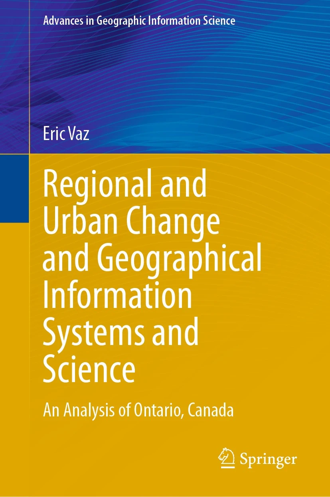
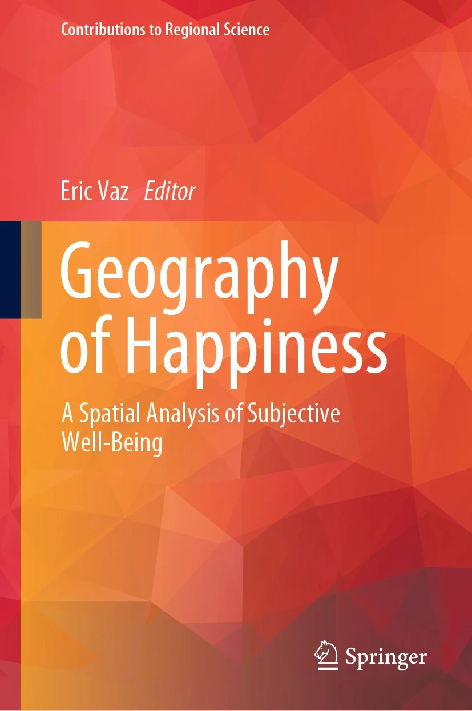
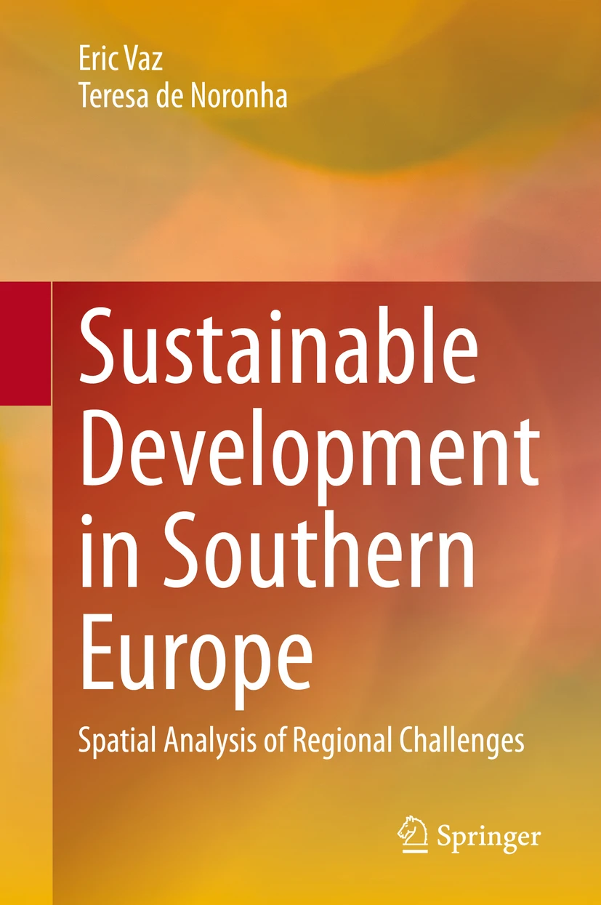
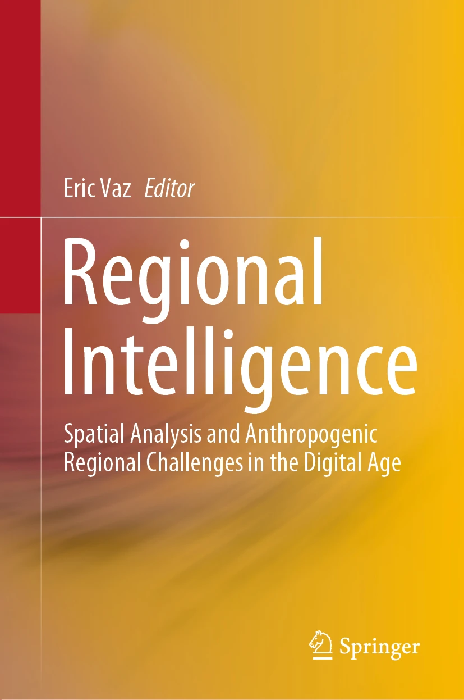
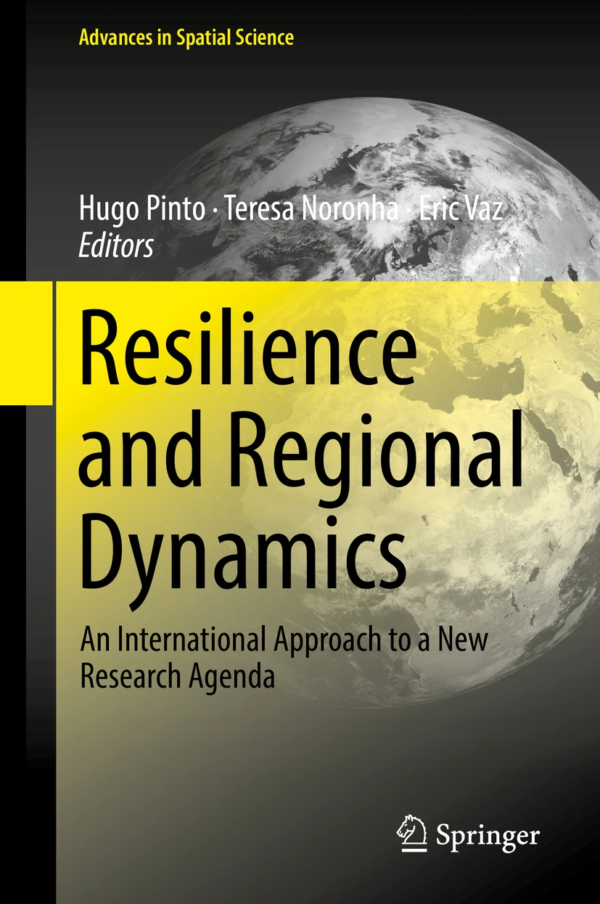

I am a geographer and spatial scientist working at the intersection of computational methods, regional dynamics, and the geography of human habitat. My research asks how spatial data and machine learning can sharpen decisions about cities, regions, health, and the places people inhabit.
Geography, properly practiced, is not description. It is a discipline for reading the structure of the world — how people, ideas, and capital arrange themselves across space, and what those arrangements reveal about the choices societies make.
I am a Full Professor in the Department of Geography and Environmental Studies at Toronto Metropolitan University, where I also directed the Laboratory for Geocomputation and served as Graduate Program Director for the Master of Spatial Analysis. Before Toronto, I led the GIScience Research Group at Heidelberg University in Germany, and earlier held positions at the University of the Algarve and NOVA University of Lisbon, where I earned my doctorate.
Across two decades I have written seven Springer monographs and more than ninety peer-reviewed articles in spatial analysis, GIScience, and regional science. I currently serve on the editorial boards of Humanities & Social Sciences Communications (Springer Nature), Habitat International (Elsevier), REGION, and Data, among others, and was Editor-in-Chief of the Canadian Journal of Regional Science.
In 2012 I was named a Rising Star by the Regional Science Association International. In 2023 I was ranked among the top scholars globally in the field of Human Habitat by ScholarGPS. My work has been highlighted by NASA Earth Observatory and Elsevier. From 2018 to 2021 I served as President of the Canadian Regional Science Association.
Alongside my scholarship I contribute to the wider community of practice — reviewing for national funding councils, serving on scientific committees in Canada and Europe, and delivering invited lectures on GeoAI, regional intelligence, and the spatial dimensions of contemporary challenges.
My work moves across several connected domains. Each is a distinct research tradition with its own methods and journals, but together they trace a single question: how does space structure the problems we care about, and what can computation tell us that narrative alone cannot?
Spatial machine learning, cellular automata, spatial econometrics, quantum methods in spatial analysis, and the methodological foundations of computational geographic inquiry.
Land-use change, urban sprawl, metropolitan dynamics, and the role of small and medium towns in the geography of peripheral regions. Where regions move, and why.
Retail location, geodemographics, wealth distribution, and the spatial logics of consumer and investor behaviour. The geography of commerce as a window on urban structure.
Injury landscapes, access to care, environmental determinants of well-being, and the spatial dimensions of mental health and social pathology in urban settings.
Wetland and habitat change, coastal erosion, climate resilience, and the anthropogenic and natural forces reshaping the physical landscape.
Urban pressure on heritage sites, archaeological geography, and the cultural assets that anchor regional identity under conditions of rapid change.
A framework I have developed across several books: how geographic evidence can inform regional and urban policy in the Anthropocene, where traditional models break down.
The spatial structure of subjective well-being — where people report feeling happy, and what the geographies of that sentiment reveal about the places we build.
Seven volumes on space, region, and change — spanning peripheral Europe, metropolitan Canada, regional intelligence, the geography of happiness, and the territorial logic of knowledge economies.
Nordicity, spatial intelligence, and Indigenous development trajectories across the Canadian North.
How knowledge economies concentrate, diffuse, and reorganize the territorial logic of innovation.

A comprehensive spatial diagnosis of Ontario's regional trajectories across four decades.

Machine learning applied to geotagged social data to map where and why people report happiness.

The geography of sustainability and peripherality across the southern European landscape.

The original statement of a framework for understanding regional dynamics under computational abundance.

A multi-author volume on the geography of regional resilience.
I welcome notes from scholars, students, journalists, and institutions on matters connected to my research. I read everything that comes through, and reply to what I can.